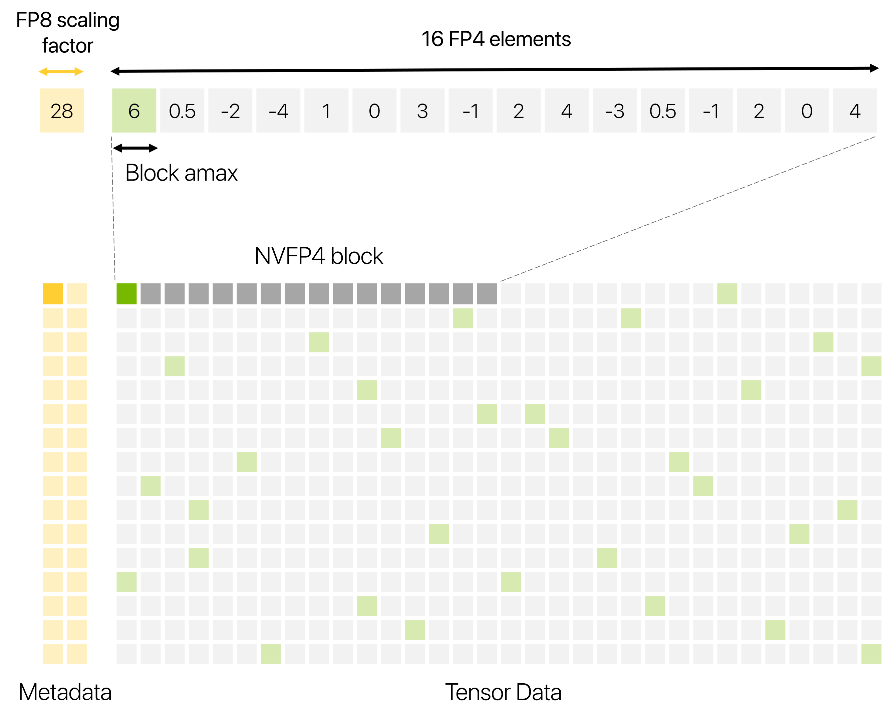
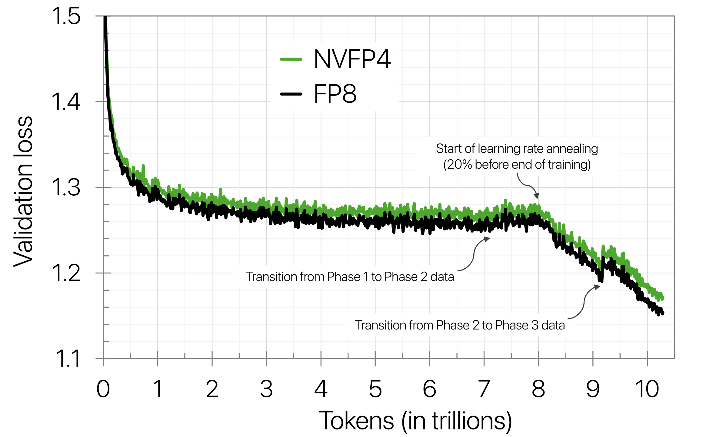
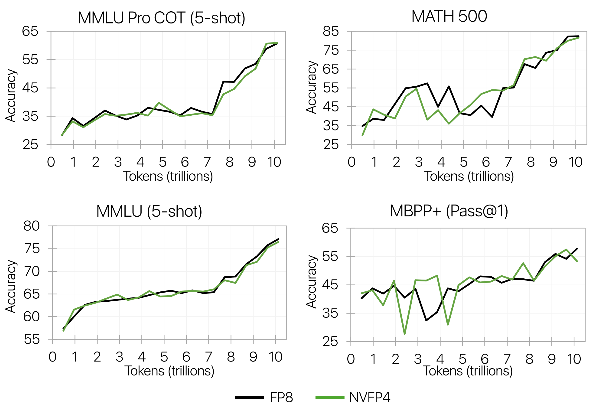
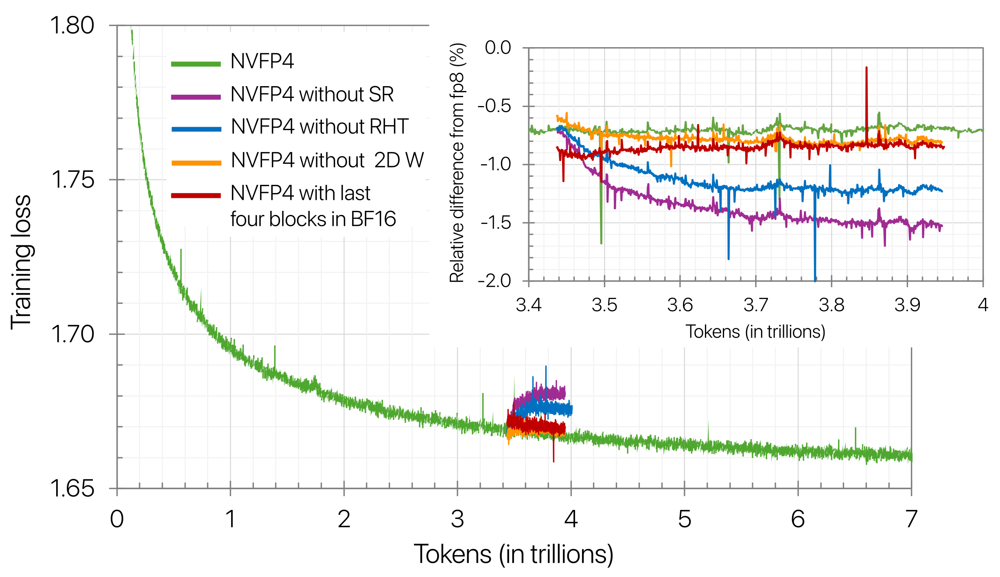
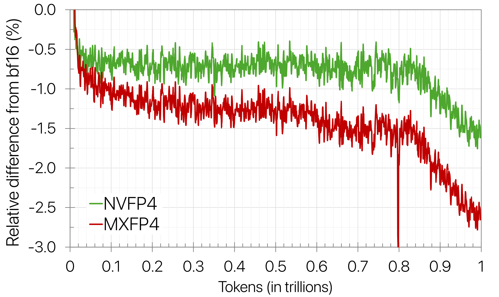

FP8训练已经普及，FP4是顺理成章的下一步：算术性能2到3倍，内存减半。NVIDIA这份技术报告把12B模型用NVFP4在10万亿token上从头训完，公开文档里最长的4-bit训练。loss和下游精度都对标FP8，方法论有四味。下文拆解。
大模型越做越大，训练前沿模型动辄几十到几百yottaflop，时间、算力、能耗都是天文数字。预训练效率决定下一代更强模型的入场券。
8-bit浮点训练已经广泛采用，再往窄走，4-bit浮点能解锁算术速度与资源利用率的新台阶。但这个精度级别的量化，挑战训练稳定性、收敛性与工程实现，尤其大模型加长token视野时。
Blackwell让FP4成为现实选项：相对FP8，算术性能2到3倍，内存用量减半。NVFP4就是为这代硬件设计的4-bit微缩放格式。
窄浮点动态范围有限，微缩放格式用块表示平衡动态范围与精度：一组数据元素共享一个scale因子。MX家族有MXFP8、MXFP6、MXFP4。
MXFP4的元素是E2M1：1符号位、2指数位、1尾数位，可表示 ±0、±0.5、±1、±1.5、±2、±3、±4、±6。原始高精度值常超出FP4范围，量化时按块内绝对最大值映射到FP4最大可表示值，防饱和也尽量不让小值归零。
MX的块scale存8-bit：每32个连续元素共享一个无符号E8M0 scale，表示2^-127到2^127的2的幂。实践发现把scale向上舍到下一个E8M0可表示值，能避免饱和。
NVFP4相对MXFP4有三处增强。第一，块从32缩到16，块内动态范围收窄，值更容易塞进FP4范围。第二，块scale用E4M3代替UE8M0，拿指数范围换尾数位，缩放更精。第三，张量级再加一个FP32 scale，两级微缩放保住块scale的表示范围。
两级缩放流程：张量级FP32 scale先把整张量的值重映射到块可表示范围，即FP4×FP8；块级E4M3 scale再把块内值挪进FP4可表示范围。这样每块至少6.25% 的值，即每16个里的amax，以接近FP8的精度编码，其余存FP4。反观MXFP4全存FP4，2的幂scale舍入最多丢一个binade的动态范围，外加 ±4、±6四个采样点。

Blackwell Tensor Core原生支持MXFP8、MXFP6、MXFP4、NVFP4的GEMM：读窄精度输入加每块8-bit scale，在块上算部分点积，乘对应scale反缩放，高精度累加出FP32点积。还原生支持FP4转换的多种舍入模式，包括round-to-nearest-even与随机舍入。
Tensor Core上FP4相对FP8的数学吞吐，GB200是2倍，GB300是3倍；FP4操作数的内存用量也大约减半。训练时间里GEMM占比高，FP4的提速空间实打实。
验证loss上NVFP4全程贴住FP8：稳定阶段相对loss误差一直在1% 以内，尾段放宽到1.5% 出头。loss有小差距，下游任务精度基本不受影响。
下游评测（BF16跑分）：MMLU-Pro 5-shot62.58% 对62.62%，几乎贴合；GSM8k CoT 92.27% 对89.08%、MGSM 85.53% 对81.87%、AGIEval英文70.31% 对67.01%，NVFP4反超。唯一短板是代码：HumanEval+ 57.43% 对59.93%，论文怀疑是评测噪声。

loss差距敏感的场景，训练尾段切高精度（衰减期从NVFP4切到BF16/MXFP8）能把loss差距抹掉：绝大部分训练跑NVFP4，尾巴一小段高精度即可。

光有格式不够，4-bit训练方法论有四味：敏感层留高精度，随机Hadamard变换管块级离群，2D块缩放保前后向一致，随机舍入消梯度偏差。小模型短token可能不需要全套，12B加10T token的规模下，消融显示缺一不可。
混合精度：线性层里的GEMM跑FP4，每个线性层有三个GEMM，前向的Fprop，反向算激活梯度的Dgrad、算权重梯度的Wgrad，输入FP4、输出BF16或FP32。但全部线性层量化会发散，最后几个线性层要的动态范围与尾数超出FP4。12B模型保守起见，前两个块加最后八个块留BF16，占线性层16%；消融显示只留最后四个块也稳定，FP4化比例还能再推。

随机Hadamard变换：微缩放压了动态范围，离群值对FP4还是杀伤大。RHT把离群打散成近似高斯分布，好表示。经验上只transform Wgrad的输入有效，Fprop和Dgrad在小规模上没收益，FP4范围本来够。矩阵尺寸取16×16，大了收益递减，小到4×4伤收敛；随机符号向量防结构化离群，大模型长token视野下有用，全训练所有线性层共享一个。
2D块缩放：变换与缩放沿点积维做，前向沿行、反向沿列，转置后同一张量有两套量化表示，链式法则断了：反向算的 ∂x = w_bprop^T ∂y，对应的是y_bprop = w_bprop x，不是前向的y_fprop = w_fprop x。权重用16×16的2D块缩放，进Tensor Core时复制成1×16块，张量级FP32 scale照用；激活和梯度用标准1×16，粒度细精度高。RHT同理只加在Wgrad上，不碰权重张量。
随机舍入：确定性舍入在FP4下有偏，尾数分布、向零下溢、向最大饱和都会系统性偏一边，梯度张量最敏感。随机舍入按到两个可表示值的距离反比随机取整，消偏。12B上梯度不用随机舍入不收敛；前向张量用随机舍入反而放大误差，权重激活用round-to-nearest-even。
8B Hybrid Mamba-Transformer，1万亿token，同数据集，BF16参考：NVFP4相对BF16的loss误差约1.5%，MXFP4约2.5%。
给MXFP4加token追赶：loss追平NVFP4需要多36% 的token（1.36T对1T），训练时间直接多出一大截，NVFP4的效率优势实锤。

参考：https://arxiv.org/html/2509.25149v2